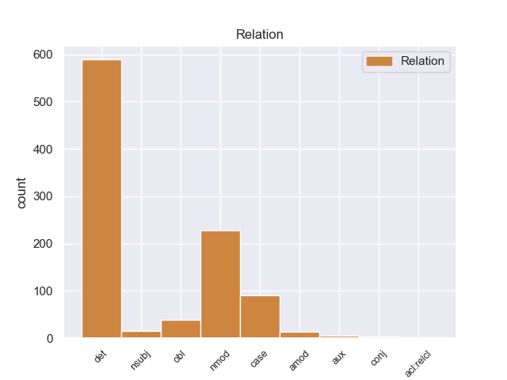
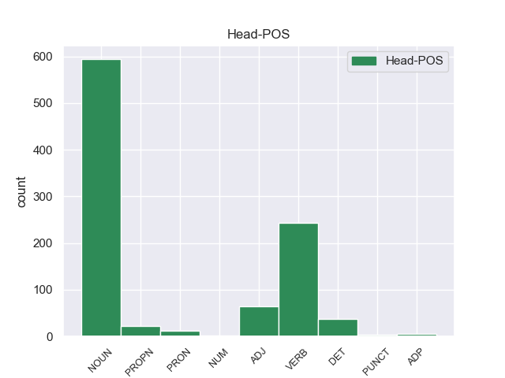
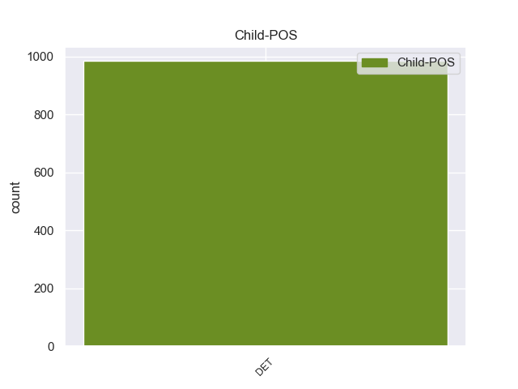

Distribution of features within this leaf



Agreement Rules sorted by frequency.
- When the dependent token is the determiner(det) of the head token, and the dependent token is DET.
1 πρόκειται _ _ _ _ 0 _ _ _
2 για _ _ _ _ 0 _ _ _
3 αυτό _ _ _ _ 0 _ _ _
4 το _ _ _ _ 0 _ _ _
5 οποίο _ _ _ _ 0 _ _ _
6 αποκαλύφθηκε _ _ _ _ 0 _ _ _
7 κατά _ _ _ _ 0 _ _ _
8 τη _ _ _ _ 0 _ _ _
9 διάρκεια _ _ _ _ 0 _ _ _
10 αυτής ο DET _ Case=Acc|Gender=Fem|Number=Sing 12 det _ _
11 της _ _ _ _ 0 _ _ _
12 διαδικασίας διαδικασίας ADJ _ Case=Acc|Gender=Fem|Number=Sing 0 _ _ _
13 , _ _ _ _ 0 _ _ _
14 ότι _ _ _ _ 0 _ _ _
15 ο _ _ _ _ 0 _ _ _
16 Εισαγγελέας _ _ _ _ 0 _ _ _
17 κάποια _ _ _ _ 0 _ _ _
18 στιγμή _ _ _ _ 0 _ _ _
19 ζήτησε _ _ _ _ 0 _ _ _
20 από _ _ _ _ 0 _ _ _
21 την _ _ _ _ 0 _ _ _
22 Πρόεδρο _ _ _ _ 0 _ _ _
23 του _ _ _ _ 0 _ _ _
24 Σώματος _ _ _ _ 0 _ _ _
25 , _ _ _ _ 0 _ _ _
26 την _ _ _ _ 0 _ _ _
27 προκάτοχό _ _ _ _ 0 _ _ _
28 σας _ _ _ _ 0 _ _ _
29 , _ _ _ _ 0 _ _ _
30 λεπτομέρειες _ _ _ _ 0 _ _ _
31 για _ _ _ _ 0 _ _ _
32 την _ _ _ _ 0 _ _ _
33 ψήφο _ _ _ _ 0 _ _ _
34 που _ _ _ _ 0 _ _ _
35 έχουν _ _ _ _ 0 _ _ _
36 δώσει _ _ _ _ 0 _ _ _
37 οι _ _ _ _ 0 _ _ _
38 δύο _ _ _ _ 0 _ _ _
39 συγκεκριμένοι _ _ _ _ 0 _ _ _
40 βουλευτές _ _ _ _ 0 _ _ _
41 προκειμένου _ _ _ _ 0 _ _ _
42 να _ _ _ _ 0 _ _ _
43 διευκρινιστεί _ _ _ _ 0 _ _ _
44 περαιτέρω _ _ _ _ 0 _ _ _
45 η _ _ _ _ 0 _ _ _
46 πιθανότητα _ _ _ _ 0 _ _ _
47 να _ _ _ _ 0 _ _ _
48 είχαν _ _ _ _ 0 _ _ _
49 ασκήσει _ _ _ _ 0 _ _ _
50 αθέμιτη _ _ _ _ 0 _ _ _
51 επιρροή _ _ _ _ 0 _ _ _
52 . _ _ _ _ 0 _ _ _
1 πρόκειται _ _ _ _ 0 _ _ _
2 για _ _ _ _ 0 _ _ _
3 αυτό _ _ _ _ 0 _ _ _
4 το _ _ _ _ 0 _ _ _
5 οποίο _ _ _ _ 0 _ _ _
6 αποκαλύφθηκε _ _ _ _ 0 _ _ _
7 κατά _ _ _ _ 0 _ _ _
8 τη _ _ _ _ 0 _ _ _
9 διάρκεια _ _ _ _ 0 _ _ _
10 αυτής _ _ _ _ 0 _ _ _
11 της _ _ _ _ 0 _ _ _
12 διαδικασίας _ _ _ _ 0 _ _ _
13 , _ _ _ _ 0 _ _ _
14 ότι _ _ _ _ 0 _ _ _
15 ο _ _ _ _ 0 _ _ _
16 Εισαγγελέας _ _ _ _ 0 _ _ _
17 κάποια _ _ _ _ 0 _ _ _
18 στιγμή _ _ _ _ 0 _ _ _
19 ζήτησε _ _ _ _ 0 _ _ _
20 από _ _ _ _ 0 _ _ _
21 την _ _ _ _ 0 _ _ _
22 Πρόεδρο _ _ _ _ 0 _ _ _
23 του _ _ _ _ 0 _ _ _
24 Σώματος _ _ _ _ 0 _ _ _
25 , _ _ _ _ 0 _ _ _
26 την _ _ _ _ 0 _ _ _
27 προκάτοχό _ _ _ _ 0 _ _ _
28 σας _ _ _ _ 0 _ _ _
29 , _ _ _ _ 0 _ _ _
30 λεπτομέρειες _ _ _ _ 0 _ _ _
31 για _ _ _ _ 0 _ _ _
32 την _ _ _ _ 0 _ _ _
33 ψήφο _ _ _ _ 0 _ _ _
34 που _ _ _ _ 0 _ _ _
35 έχουν _ _ _ _ 0 _ _ _
36 δώσει _ _ _ _ 0 _ _ _
37 οι _ _ _ _ 0 _ _ _
38 δύο _ _ _ _ 0 _ _ _
39 συγκεκριμένοι _ _ _ _ 0 _ _ _
40 βουλευτές _ _ _ _ 0 _ _ _
41 προκειμένου _ _ _ _ 0 _ _ _
42 να _ _ _ _ 0 _ _ _
43 διευκρινιστεί διευκρινιστεί DET _ Case=Acc|Gender=Fem|Number=Sing 51 nmod _ _
44 περαιτέρω _ _ _ _ 0 _ _ _
45 η _ _ _ _ 0 _ _ _
46 πιθανότητα _ _ _ _ 0 _ _ _
47 να _ _ _ _ 0 _ _ _
48 είχαν _ _ _ _ 0 _ _ _
49 ασκήσει _ _ _ _ 0 _ _ _
50 αθέμιτη _ _ _ _ 0 _ _ _
51 επιρροή επιρροή NOUN _ Case=Acc|Gender=Fem|Number=Sing 0 _ _ _
52 . _ _ _ _ 0 _ _ _
1 Ο _ _ _ _ 0 _ _ _
2 αλ _ _ _ _ 0 _ _ _
3 Σενούσι _ _ _ _ 0 _ _ _
4 έχει _ _ _ _ 0 _ _ _
5 καταδικαστεί _ _ _ _ 0 _ _ _
6 σε _ _ _ _ 0 _ _ _
7 ισόβια _ _ _ _ 0 _ _ _
8 κάθειρξη _ _ _ _ 0 _ _ _
9 λόγω _ _ _ _ 0 _ _ _
10 συμμετοχής _ _ _ _ 0 _ _ _
11 του _ _ _ _ 0 _ _ _
12 , _ _ _ _ 0 _ _ _
13 το _ _ _ _ 0 _ _ _
14 1989 _ _ _ _ 0 _ _ _
15 , _ _ _ _ 0 _ _ _
16 σε _ _ _ _ 0 _ _ _
17 επίθεση _ _ _ _ 0 _ _ _
18 κατά ο DET _ Case=Acc|Gender=Fem|Number=Sing 20 case _ _
19 γαλλικού _ _ _ _ 0 _ _ _
20 αεροσκάφους αεροσκάφουςς NOUN _ Case=Gen|Gender=Fem|Number=Sing 0 _ _ _
21 , _ _ _ _ 0 _ _ _
22 κατά _ _ _ _ 0 _ _ _
23 την _ _ _ _ 0 _ _ _
24 οποία _ _ _ _ 0 _ _ _
25 σκοτώθηκαν _ _ _ _ 0 _ _ _
26 170 _ _ _ _ 0 _ _ _
27 άνθρωποι _ _ _ _ 0 _ _ _
28 . _ _ _ _ 0 _ _ _
1 Ο _ _ _ _ 0 _ _ _
2 θάνατος θάνατοςς DET _ Case=Acc|Gender=Fem|Number=Sing 10 obl _ _
3 του _ _ _ _ 0 _ _ _
4 βασιλιά _ _ _ _ 0 _ _ _
5 Αλέξανδρου _ _ _ _ 0 _ _ _
6 είχε _ _ _ _ 0 _ _ _
7 ως _ _ _ _ 0 _ _ _
8 συνέπεια _ _ _ _ 0 _ _ _
9 να _ _ _ _ 0 _ _ _
10 ανακηρύξει ανακηρύξει VERB _ Case=Acc|Gender=Fem|Number=Sing 0 _ _ _
11 αντιβασιλέα _ _ _ _ 0 _ _ _
12 η _ _ _ _ 0 _ _ _
13 Βουλή _ _ _ _ 0 _ _ _
14 τον _ _ _ _ 0 _ _ _
15 ναύαρχο _ _ _ _ 0 _ _ _
16 Παύλο _ _ _ _ 0 _ _ _
17 Κουντουριώτη _ _ _ _ 0 _ _ _
18 . _ _ _ _ 0 _ _ _
1 Δεκάδες δεκάδες DET _ Case=Acc|Gender=Fem|Number=Sing 7 nsubj _ _
2 χιλιάδες _ _ _ _ 0 _ _ _
3 πολίτες _ _ _ _ 0 _ _ _
4 έμειναν _ _ _ _ 0 _ _ _
5 χωρίς _ _ _ _ 0 _ _ _
6 ηλεκτρικό _ _ _ _ 0 _ _ _
7 ρεύμα ρεύμα NOUN _ Case=Acc|Gender=Fem|Number=Sing 0 _ _ _
8 την _ _ _ _ 0 _ _ _
9 Τρίτη _ _ _ _ 0 _ _ _
10 , _ _ _ _ 0 _ _ _
11 ενώ _ _ _ _ 0 _ _ _
12 τα _ _ _ _ 0 _ _ _
13 σωστικά _ _ _ _ 0 _ _ _
14 συνεργεία _ _ _ _ 0 _ _ _
15 έδιναν _ _ _ _ 0 _ _ _
16 μάχη _ _ _ _ 0 _ _ _
17 με _ _ _ _ 0 _ _ _
18 τον _ _ _ _ 0 _ _ _
19 χρόνο _ _ _ _ 0 _ _ _
20 για _ _ _ _ 0 _ _ _
21 τη _ _ _ _ 0 _ _ _
22 διάσωση _ _ _ _ 0 _ _ _
23 ανθρώπων _ _ _ _ 0 _ _ _
24 . _ _ _ _ 0 _ _ _
1 Μικρή _ _ _ _ 0 _ _ _
2 και _ _ _ _ 0 _ _ _
3 Μεγάλη μεγάλη DET _ Case=Acc|Gender=Fem|Number=Sing 4 amod _ _
4 Άμμος άμμοςς NOUN _ Case=Acc|Gender=Fem|Number=Sing 0 _ _ _
5 , _ _ _ _ 0 _ _ _
6 Πισίνα _ _ _ _ 0 _ _ _
7 , _ _ _ _ 0 _ _ _
8 Γαλλικός _ _ _ _ 0 _ _ _
9 Μώλος _ _ _ _ 0 _ _ _
10 , _ _ _ _ 0 _ _ _
11 Ζάβια _ _ _ _ 0 _ _ _
12 , _ _ _ _ 0 _ _ _
13 Μεγάλο _ _ _ _ 0 _ _ _
14 Στάφο _ _ _ _ 0 _ _ _
15 , _ _ _ _ 0 _ _ _
16 Πέρδικα _ _ _ _ 0 _ _ _
17 , _ _ _ _ 0 _ _ _
18 Ζέρη _ _ _ _ 0 _ _ _
19 , _ _ _ _ 0 _ _ _
20 Αρίλλας _ _ _ _ 0 _ _ _
21 . _ _ _ _ 0 _ _ _
1 Οι _ _ _ _ 0 _ _ _
2 εργασίες _ _ _ _ 0 _ _ _
3 δεν _ _ _ _ 0 _ _ _
4 μπορούν μπορούν DET _ Case=Acc|Gender=Fem|Number=Sing 6 aux _ _
5 να _ _ _ _ 0 _ _ _
6 μεταβιβαστούν μεταβιβαστούν DET _ Case=Acc|Gender=Fem|Number=Sing 0 _ _ _
7 σ _ _ _ _ 0 _ _ _
8 το _ _ _ _ 0 _ _ _
9 προεδρείο _ _ _ _ 0 _ _ _
10 ή _ _ _ _ 0 _ _ _
11 σ _ _ _ _ 0 _ _ _
12 τους _ _ _ _ 0 _ _ _
13 τρεις _ _ _ _ 0 _ _ _
14 προεξάρχοντες _ _ _ _ 0 _ _ _
15 , _ _ _ _ 0 _ _ _
16 δηλαδή _ _ _ _ 0 _ _ _
17 τον _ _ _ _ 0 _ _ _
18 πρόεδρο _ _ _ _ 0 _ _ _
19 και _ _ _ _ 0 _ _ _
20 τους _ _ _ _ 0 _ _ _
21 δύο _ _ _ _ 0 _ _ _
22 αντιπροέδρους _ _ _ _ 0 _ _ _
23 . _ _ _ _ 0 _ _ _
1 Πλέον _ _ _ _ 0 _ _ _
2 οι _ _ _ _ 0 _ _ _
3 αδιάθετες _ _ _ _ 0 _ _ _
4 ποσότητες _ _ _ _ 0 _ _ _
5 πατάτας _ _ _ _ 0 _ _ _
6 Νευροκοπίου _ _ _ _ 0 _ _ _
7 έχουν _ _ _ _ 0 _ _ _
8 περιοριστεί _ _ _ _ 0 _ _ _
9 σε _ _ _ _ 0 _ _ _
10 3.000 _ _ _ _ 0 _ _ _
11 με _ _ _ _ 0 _ _ _
12 4.000 4.000 DET _ Case=Acc|Gender=Fem|Number=Sing 13 conj _ _
13 τόνους τόνους NOUN _ Case=Acc|Gender=Fem|Number=Sing 0 _ _ _
14 , _ _ _ _ 0 _ _ _
15 και _ _ _ _ 0 _ _ _
16 αναμένεται _ _ _ _ 0 _ _ _
17 να _ _ _ _ 0 _ _ _
18 εξαντληθούν _ _ _ _ 0 _ _ _
19 τις _ _ _ _ 0 _ _ _
20 επόμενες _ _ _ _ 0 _ _ _
21 μέρες _ _ _ _ 0 _ _ _
22 . _ _ _ _ 0 _ _ _
1 Η _ _ _ _ 0 _ _ _
2 Μπενφίκα _ _ _ _ 0 _ _ _
3 ήταν _ _ _ _ 0 _ _ _
4 πιο _ _ _ _ 0 _ _ _
5 επιθετική _ _ _ _ 0 _ _ _
6 και _ _ _ _ 0 _ _ _
7 καλύτερη _ _ _ _ 0 _ _ _
8 σ _ _ _ _ 0 _ _ _
9 το _ _ _ _ 0 _ _ _
10 πρώτο _ _ _ _ 0 _ _ _
11 ημίχρονο _ _ _ _ 0 _ _ _
12 , _ _ _ _ 0 _ _ _
13 με _ _ _ _ 0 _ _ _
14 αποτέλεσμα αποτέλεσμα DET _ Case=Nom|Gender=Fem|Number=Sing 16 acl:relcl _ _
15 να _ _ _ _ 0 _ _ _
16 ανοίξει ανοίξει VERB _ Case=Acc|Gender=Fem|Number=Sing 0 _ _ _
17 το _ _ _ _ 0 _ _ _
18 σκορ _ _ _ _ 0 _ _ _
19 σ _ _ _ _ 0 _ _ _
20 το _ _ _ _ 0 _ _ _
21 πρώτο _ _ _ _ 0 _ _ _
22 λεπτό _ _ _ _ 0 _ _ _
23 των _ _ _ _ 0 _ _ _
24 καθυστερήσεων _ _ _ _ 0 _ _ _
25 , _ _ _ _ 0 _ _ _
26 χάρη _ _ _ _ 0 _ _ _
27 σ _ _ _ _ 0 _ _ _
28 τον _ _ _ _ 0 _ _ _
29 Μάξι _ _ _ _ 0 _ _ _
30 Περέιρα _ _ _ _ 0 _ _ _
31 . _ _ _ _ 0 _ _ _
Disagree Examples:
1 Εκτός _ _ _ _ 0 _ _ _
2 από _ _ _ _ 0 _ _ _
3 την ο DET DET Case=Acc|Definite=Def|Gender=Fem|Number=Sing|PronType=Art 5 det _ _
4 σωρεία _ _ _ _ 0 _ _ _
5 καταχρήσεων κατάχρηση NOUN NOUN Case=Gen|Gender=Fem|Number=Plur 0 _ _ _
6 μεγάλης _ _ _ _ 0 _ _ _
7 κλίμακας _ _ _ _ 0 _ _ _
8 , _ _ _ _ 0 _ _ _
9 διαπράττονται _ _ _ _ 0 _ _ _
10 και _ _ _ _ 0 _ _ _
11 πολλές _ _ _ _ 0 _ _ _
12 καταχρήσεις _ _ _ _ 0 _ _ _
13 σε _ _ _ _ 0 _ _ _
14 μικρή _ _ _ _ 0 _ _ _
15 κλίμακα _ _ _ _ 0 _ _ _
16 , _ _ _ _ 0 _ _ _
17 διότι _ _ _ _ 0 _ _ _
18 ο _ _ _ _ 0 _ _ _
19 τομέας _ _ _ _ 0 _ _ _
20 των _ _ _ _ 0 _ _ _
21 μεταφορών _ _ _ _ 0 _ _ _
22 χαρακτηρίζεται _ _ _ _ 0 _ _ _
23 σε _ _ _ _ 0 _ _ _
24 μεγάλο _ _ _ _ 0 _ _ _
25 βαθμό _ _ _ _ 0 _ _ _
26 από _ _ _ _ 0 _ _ _
27 καταχρήσεις _ _ _ _ 0 _ _ _
28 . _ _ _ _ 0 _ _ _
1 Το _ _ _ _ 0 _ _ _
2 2002 _ _ _ _ 0 _ _ _
3 χρηματοδοτήθηκαν _ _ _ _ 0 _ _ _
4 10.029 _ _ _ _ 0 _ _ _
5 σχέδια _ _ _ _ 0 _ _ _
6 με _ _ _ _ 0 _ _ _
7 ποσόν _ _ _ _ 0 _ _ _
8 λίγο _ _ _ _ 0 _ _ _
9 μεγαλύτερο _ _ _ _ 0 _ _ _
10 των ο DET DET Case=Gen|Definite=Def|Gender=Fem|Number=Plur|PronType=Art 13 det _ _
11 80 _ _ _ _ 0 _ _ _
12 εκατ. _ _ _ _ 0 _ _ _
13 ευρώ ευρώ NOUN NOUN Case=Acc|Gender=Neut|Number=Sing 0 _ _ _
14 . _ _ _ _ 0 _ _ _